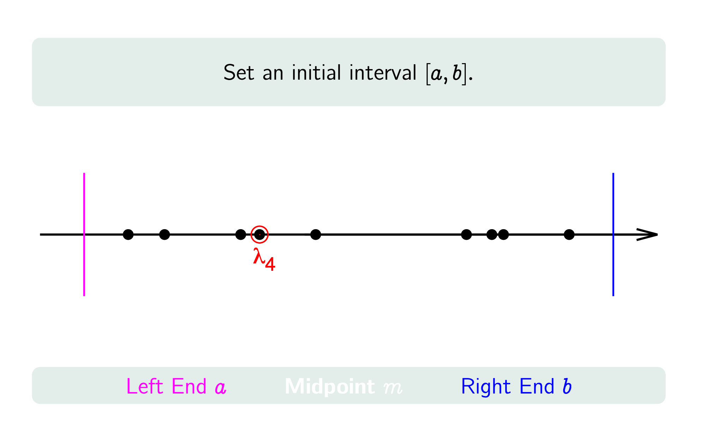
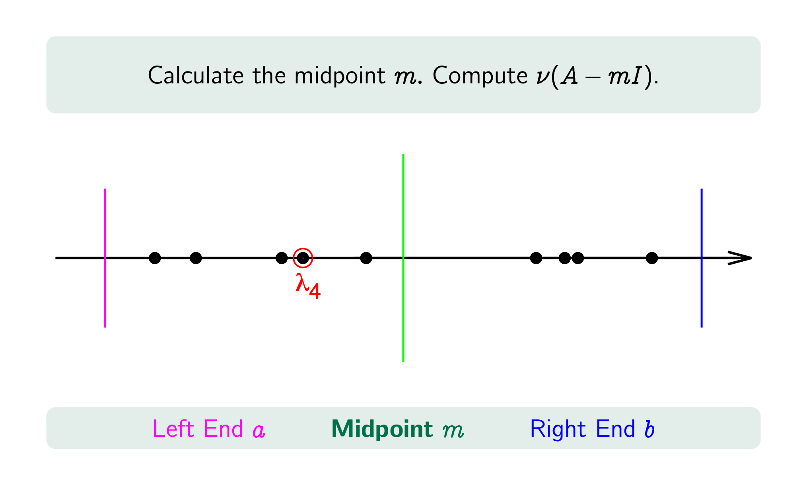
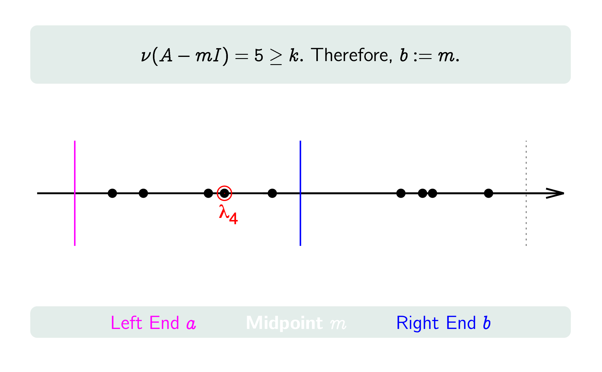
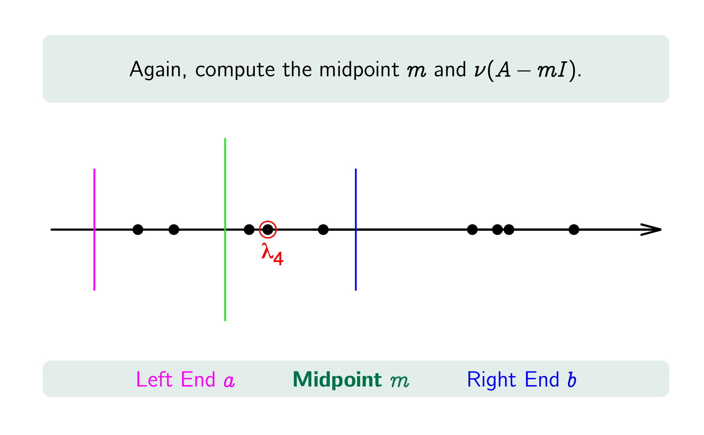
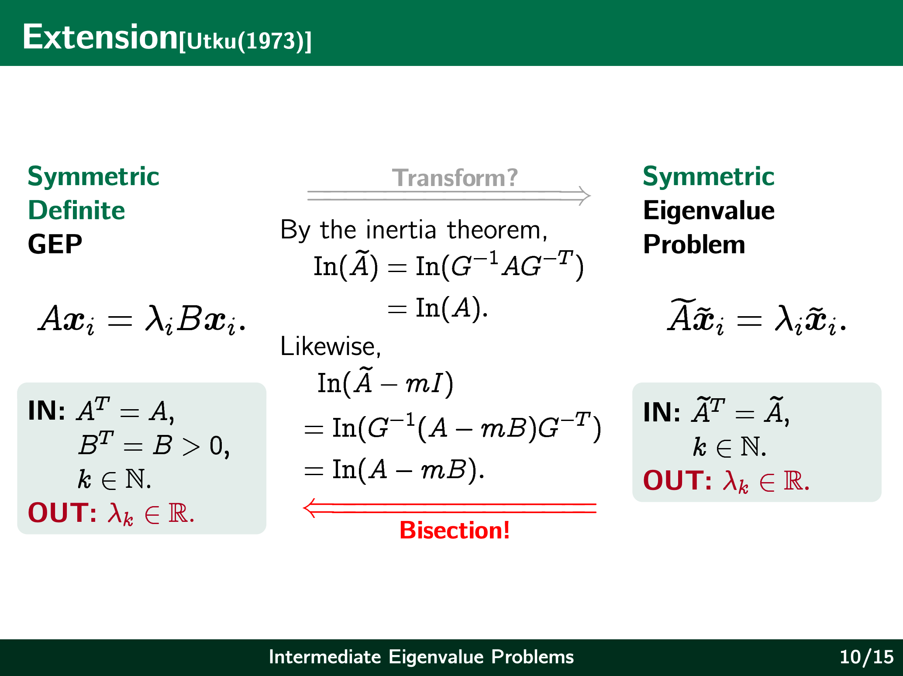
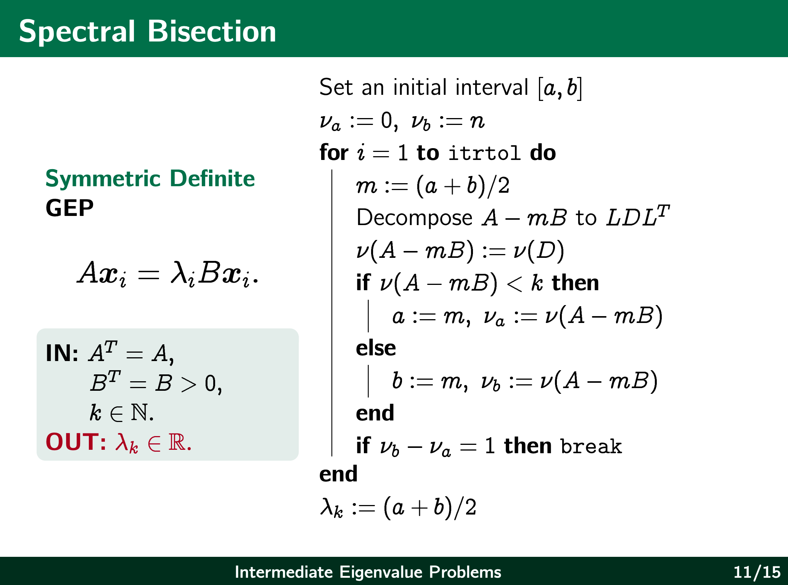
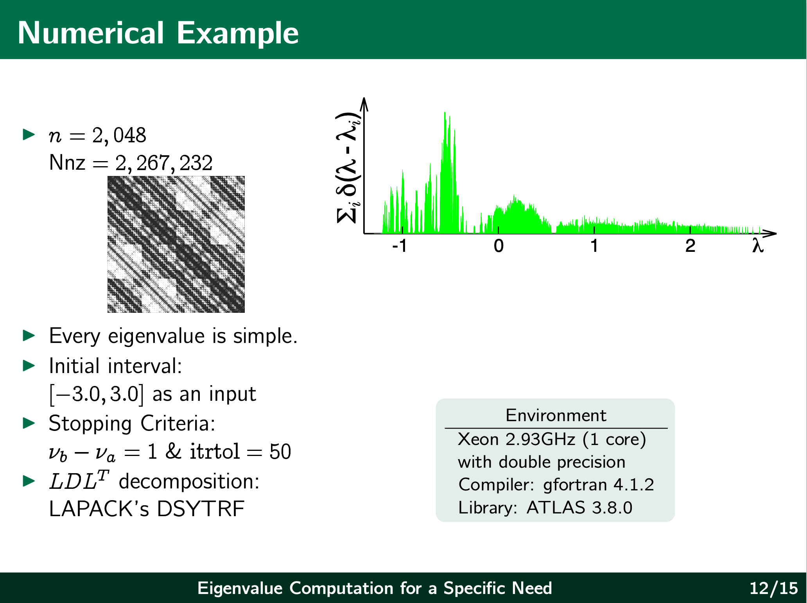
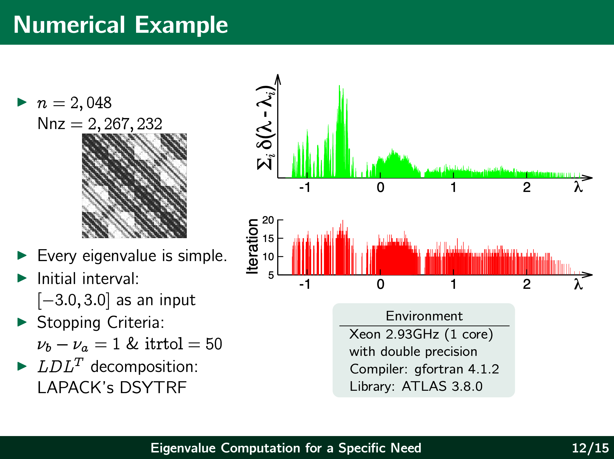

张教授在报告中首先介绍了该问题的由来，起初是一个物理学教授来咨询他们如何在广义特征值问题中寻找到他们想要得到的第k个特征值，他们需要知道这个特征值在广义特征值问题中的位置。解决该问题主要用到了Sylvester惯性定理，矩阵合同和二分法思想，这并不困难，只是很基础的高等代数知识和简单的分析思想
一、问题介绍
这个问题来自一个物理教授在电子结构计算（Electronic Structure Calculation）中的实际需求。 考虑一个对称正定广义特征值问题（Symmetric Definite Generalized Eigenvalue Problem）
A x = λ B x,
其中 A 是实对称矩阵，B 是对称正定矩阵。假设这个问题具有按大小排列的特征值
λ1 ≤ λ2 ≤ ··· ≤ λn.
通常，我们可能会希望求出全部特征值，或者求最大的特征值、最接近某个给定数值的特征值。但在电子结构计算中，实际的物理问题往往只需要某些特定的能级（energy levels），而这些能级在所有特征值中的位置可以由材料的物理性质预先确定。
因此，这里真正的问题不是“把所有特征值都计算出来”，而是：
如何直接找到广义特征值问题中的第 k 个特征值 λk？
这就是所谓的 Intermediate Eigenvalue Problem。这里的“Intermediate”是指我们要找的特征值既不是最大的，也不是最小的，而是位于整个特征值序列中间某个确定位置的特征值。
PPT 中给出的实际背景是电子结构计算：根据原子的构型以及材料本身的物理性质，可以预先判断哪些能级与发光（luminescence）有关，因此只需要计算这些特定的能量水平，而没有必要把所有特征值全部求出来。
这也带来了一个很重要的问题：即使我们知道目标是 λk，我们仍然需要知道它在所有特征值中的位置。因此问题可以理解为：
在不知道所有特征值具体数值的情况下，如何判断一个数 m 的左边究竟有多少个特征值？
如果能够解决这个问题，那么就可以像二分查找一样，不断缩小 λk 所在的区间，最终把第 k 个特征值定位出来。
二、解决方法
为了理解这个方法，需要先理解三个核心思想：Sylvester 惯性定理、矩阵合同以及二分法。
1. Sylvester 惯性定理
首先考虑一个实对称矩阵 A。由于 A 是实对称矩阵，所以它的全部特征值都是实数。 我们把 A 的特征值按照正、负、零分成三类，并定义 A 的惯性（inertia）为
In(A) = (n+, n−, n0),
其中：
- n+：A 的正特征值个数；
- n−：A 的负特征值个数；
- n0：A 的零特征值个数。
Sylvester 惯性定理告诉我们，如果 C 是一个非奇异矩阵，那么
A 和 CTAC
具有完全相同的惯性。
也就是说，虽然矩阵 A 在进行这种变换之后，其具体的元素以及特征值本身可能发生变化，但是“正特征值有多少个、负特征值有多少个、零特征值有多少个”不会发生变化。
这就是 Sylvester 惯性定理最重要的地方：我们不需要直接求出特征值，只要把矩阵通过合同变换变成一个容易判断正负号的形式，就可以得到它的惯性。
在实际计算中，可以利用带主元选取的分解，把一个实对称矩阵写成类似
A = LDLT
的形式，其中 L 是单位下三角矩阵，而 D 是对角矩阵或块对角矩阵。由于这种变换不会改变惯性，因此我们可以通过 D 中对角元素或块的符号来计算 A 的惯性。PPT 中采用的数值实现也是通过分解来计算惯性，并使用 LAPACK 的 DSYTRF 进行对称矩阵分解。
2. 矩阵合同
这里需要理解为什么前面会出现
CTAC
这样的矩阵。
如果存在非奇异矩阵 C，使得
B = CTAC,
那么我们称 A 和 B 合同（congruent）。
矩阵合同和相似矩阵并不是同一个概念。相似变换通常写成
B = C−1AC,
它保持的是特征值本身；而合同变换
B = CTAC
并不要求保持特征值，但是对于实对称矩阵，它会保持惯性。这正是我们这里真正需要的性质。
换句话说，我们并不是通过合同变换直接求特征值，而是利用合同变换把一个复杂的矩阵转换成容易判断正负性的形式，然后利用 Sylvester 惯性定理得到“这个矩阵有多少个正特征值、多少个负特征值”。
而这恰好可以用来解决“某一个数 m 的左边到底有多少个特征值”这个问题。
3. 二分法
理解了惯性之后，就可以理解整个算法的核心思想：二分法（bisection）。
先用一个比较直观的抽奖例子来理解。 假设一个聚会最多可以有 N 个人，因此事先准备了 N 个写有不同数字的纸团。实际参加聚会的人数为 n，每个人进入会场时随机抽取一个纸团。
主持人随后宣布一个整数 k，规定持有“第 k 小数字”的人获奖。
现在的问题是：我们并不知道每个人手中的数字是什么，但希望尽快找到第 k 小的数字。
一个自然的办法是让主持人先报出一个数字 d，然后让所有手中数字小于 d 的人举手。如果举手人数记为 n(d)，那么 n(d) 实际上就告诉了我们：
d 的左边有多少个数字。
如果找到两个数字 a 和 b，使得
n(a) < k < n(b),
那么我们就知道第 k 小的数字一定位于 a 和 b 之间。
接下来取中点
c = (a+b)/2.
再次询问有多少个数字小于 c。 如果 n(c) < k，那么第 k 小的数字一定在 c 的右边，于是令 a := c；否则令 b := c。
这样，每进行一次判断，候选区间就缩小大约一半。不断重复这一过程，最终就可以把第 k 小的数字定位到一个非常小的区间中。PPT 中正是用这个抽奖例子说明二分法的基本思想。
那么现在的问题就变成：
能不能把“举手的人数”换成“某个矩阵下面有多少个特征值”？
答案是可以的，而这正是 Sylvester 惯性定理发挥作用的地方。
大概的图示如下：




三、算法
1. 先从普通对称特征值问题开始
首先考虑最简单的标准对称特征值问题
A x = λx,
其中 A 是实对称矩阵，并且特征值按照
λ1 ≤ λ2 ≤ ··· ≤ λn
排列。
假设我们现在希望寻找第 k 个特征值 λk。
我们任意选择一个数 m，并考虑矩阵
A − mI.
如果 A 的特征值为 λ1, …, λn，那么 A − mI 的特征值就是
λ1−m, λ2−m, …, λn−m.
因此：
λi < m
当且仅当
λi−m < 0.
所以，A − mI 的负特征值个数，恰好就是 A 中小于 m 的特征值个数。
记这个负特征值的数量为 ν(A−mI)，那么
ν(A−mI) = # { λi : λi < m }.
这一步非常关键，因为它把“判断 m 左边有多少个特征值”转化成了“计算 A−mI 的惯性”。
而惯性又可以通过 Sylvester 惯性定理和矩阵分解高效得到，因此我们不需要把所有特征值计算出来。
2. 根据惯性判断第 k 个特征值的位置
假设我们已经知道当前区间为 [a,b]，并且 λk 位于这个区间。 取中点
m = (a+b)/2.
计算
ν(A−mI).
然后进行判断：
- 如果 ν(A−mI) < k，那么说明小于 m 的特征值还不到 k 个，因此 λk 一定在 m 的右边，令 a := m；
- 如果 ν(A−mI) ≥ k，那么说明至少已经有 k 个特征值小于 m，因此 λk 在 m 的左边，令 b := m。
这样就和前面的抽奖问题完全对应起来了：
ν(A−mI) 就相当于“举手人数”。
因此，我们可以不断进行二分，把 λk 所在的区间不断缩小。
3. 为什么最终可以只剩下一个特征值？
假设在某一步中，我们知道区间 [a,b] 中只包含一个特征值。 那么就有
ν(A−bI) − ν(A−aI) = 1.
这里的 ν(a) 和 ν(b) 可以理解为 a 和 b 左边分别有多少个特征值。 因此二者之差，就是区间 (a,b) 中所包含的特征值数量。
如果这个数量等于 1，那么我们就已经成功把第 k 个特征值单独定位出来了。 PPT 中的示意例子假设一共有 9 个简单特征值，希望寻找 λ4，经过不断进行 spectral bisection，最终得到一个只包含 λ4 的区间。
4. 推广到广义特征值问题
前面的讨论针对的是标准特征值问题
Ax = λx.
但是最开始真正需要解决的是广义特征值问题
Ax = λBx,
其中 A 是对称矩阵，B 是对称正定矩阵。
这里最大的区别就是出现了矩阵 B。
因为 B 是正定矩阵，所以可以进行 Cholesky 分解：
B = LLT.
利用这个分解，可以将广义特征值问题转换成一个标准的对称特征值问题。 令
y = LTx,
则原来的问题可以经过变换写成相应的标准对称特征值问题。 因此，从理论上来说，我们似乎可以先把广义特征值问题转化成标准问题，再直接使用前面的 spectral bisection。
但是这里存在一个重要问题：如果我们直接进行这样的变换，在实际计算中可能并不希望显式地构造转换后的矩阵。 因此 PPT 采用了另一种更直接的观点。
对于一个给定的 m，考虑矩阵
A − mB.
广义特征值 λ 满足
Ax = λBx.
因此
(A−mB)x = (λ−m)Bx.
由于 B 是正定矩阵，A−mB 的惯性就能够告诉我们有多少个广义特征值小于 m。 也就是说，
ν(A−mB)
可以发挥和标准特征值问题中 ν(A−mI) 相同的作用。 PPT 中明确指出，经过相应的变换后，可以利用惯性定理得到 A−mB 的惯性，并由此确定小于 m 的广义特征值数量。
5. 广义特征值问题中的二分算法
因此，对于
Ax = λBx
我们可以完全按照前面的思想进行 spectral bisection。
首先给定一个初始区间 [a,b]，这个区间包含我们想要寻找的第 k 个特征值。 然后重复以下步骤：
- 计算中点：
m = (a+b)/2;
- 构造矩阵：
A−mB;
- 通过对 A−mB 进行分解，计算它的惯性，从而得到
ν(A−mB),
即小于 m 的广义特征值数量； - 如果
ν(A−mB) < k,
则第 k 个特征值在 m 的右边，因此令 a := m； - 否则令 b := m。
- 不断重复上述过程，直到区间足够小，或者区间内只剩下目标特征值。
所以整个算法实际上可以概括成一句话：
通过计算 A−mB 的惯性，判断 m 左边有多少个广义特征值，再利用二分法不断缩小第 k 个特征值所在的区间。
这就是这篇报告中最核心的算法思想。PPT 中给出的广义特征值版本与标准版本的主要区别，也正是把标准问题中的 I 换成了 B，即考察 A−mB。


四、数值实验
在理论方法介绍之后，报告给出了数值实验来验证这种方法。 实验针对的是对称正定广义特征值问题，并使用矩阵分解来计算惯性。
实验中采用 LAPACK 的 DSYTRF 进行对称矩阵分解，并在双精度环境下进行计算。实验环境包括单核 Xeon 2.93GHz 处理器、gfortran 4.1.2 编译器以及 ATLAS 3.8.0 数值线性代数库。
实验的一个重要特点是：并不是要求计算全部特征值，而是针对某一个特定位置的特征值进行定位。 例如报告展示了寻找 λ1024、λ1025 等中间位置特征值的情况，并观察了二分迭代过程。
这也进一步体现了这个算法的目的：当应用只需要某一个特定位置的特征值时，没有必要先把所有特征值完整计算出来，而可以通过“计数 + 二分”的方式直接定位目标。


五、总结与未来可能的问题
这篇报告所解决的问题，本质上是一个特定位置特征值的计算问题。 传统的特征值算法往往适合计算全部特征值，或者计算最大、最小、某个给定点附近的特征值。但在实际应用中，有时候我们只关心某一个已经由应用背景确定位置的特征值 λk。
对于这种需求，报告给出的核心思路可以总结为：
惯性计算 → 特征值计数 → 二分定位
首先利用 Sylvester 惯性定理，将一个矩阵的惯性问题转化为可以通过矩阵分解进行计算的问题。 然后，对于标准特征值问题，通过计算 A−mI 的惯性，可以知道 m 左边有多少个特征值。 最后利用二分法不断缩小目标特征值所在的区间。
对于广义特征值问题
Ax = λBx,
则把 A−mI 换成 A−mB。 由于 B 是对称正定矩阵，因此同样可以利用惯性来判断小于 m 的广义特征值数量，从而将整个 spectral bisection 方法推广到广义特征值问题。
从我自己的理解来看，这个方法最值得学习的地方并不是“二分法”本身，而是如何把一个看起来需要求特征值的问题，转化成一个只需要判断特征值数量的问题。
也就是说，我们并没有直接问：
“λk 到底是多少？”
而是不断询问：
“给定一个 m，到 m 为止究竟已经有多少个特征值？”
一旦能够回答这个问题，就可以利用二分法逐渐确定 λk 的位置。
因此，这个算法可以看成是把特征值计算问题转化为了一个特征值计数问题，再通过二分搜索完成目标特征值的定位。
报告最后也指出，这种方法仍然有进一步研究的空间。特别是在大规模矩阵的情况下，如何降低每一次惯性计算的成本、提高数值稳定性，以及如何进一步提高整个算法的计算效率，都是值得继续研究的问题。报告的结论也明确将其概括为：这是一个 application-driven 的问题，通过 decomposition 实现 bisection，并且仍然需要进一步研究。
六、算法的适用条件与数学意义，关于矩阵B正定性的思考
前面的算法可以通过计算
A - mB
的惯性来判断广义特征值问题
Ax = λBx
中有多少个特征值小于 m。但是这里有一个非常重要的前提：矩阵 B 必须是对称正定矩阵。
那么，一个自然的问题就是： 为什么 B 必须是正定矩阵？如果 B 不是正定矩阵，继续按照前面的算法计算得到的结果又有什么数学意义？
1. 为什么 B 的正定性如此重要？
对于广义特征值问题
Ax = λBx,
假设 x 是对应于特征值 λ 的特征向量，那么对于任意给定的 m，有
(A - mB)x = (λ - m)Bx.
从二次型的角度来看，可以得到
xT(A-mB)x = (λ-m)xTBx.
这里正定性就发挥了关键作用。如果 B 是正定矩阵，那么对于任意非零向量 x，都有
xTBx > 0.
因此，
sign [ xT(A-mB)x ] = sign(λ-m).
也就是说，A-mB 的正负性能够直接反映 λ 与 m 的大小关系。
如果 λ < m，那么
λ-m < 0,
因此对应方向上的二次型为负；如果 λ > m，则对应方向上的二次型为正。
因此，当 B 正定时，A-mB 的负惯性指数恰好可以用来计算小于 m 的广义特征值数量：
ν-(A-mB) = # {λi : λi < m}.
这正是前面 spectral bisection 算法能够成立的数学基础。
2. 如果 B 不是正定矩阵会发生什么？
如果 B 不是正定矩阵，那么就可能存在非零向量 x，使得
xTBx < 0.
这时
xT(A-mB)x = (λ-m)xTBx
中的两个因子的符号可能发生反转。
例如，如果
λ-m > 0
但是
xTBx < 0,
那么仍然可能得到
xT(A-mB)x < 0.
也就是说，一个满足 λ > m 的广义特征值，也可能在 A-mB 中对应一个负方向。
因此，此时 A-mB 的负惯性就不能再简单地解释为“m 左边的广义特征值个数”。
换句话说，前面算法中最关键的一步
ν-(A-mB) = # {λi < m}
已经不再能够保证成立。
3. 一个简单的反例
考虑
A = \begin{pmatrix} 1 & 0 \\ 0 & 2 \end{pmatrix}, \qquad B = \begin{pmatrix} 1 & 0 \\ 0 & -1 \end{pmatrix}.
这里 B 不是正定矩阵，因为它同时具有正特征值和负特征值。
考虑广义特征值问题
Ax = λBx.
沿着第一个坐标方向可以得到
λ = 1,
而沿着第二个坐标方向可以得到
2 = -λ,
因此第二个广义特征值为
λ = -2.
所以这个问题的广义特征值为
-2,\quad 1.
现在取
m = 0.
显然，真正小于 0 的广义特征值有一个，即 -2。
但是按照前面的算法，我们考察
A-mB=A = \begin{pmatrix} 1 & 0 \\ 0 & 2 \end{pmatrix}.
A 没有负特征值，因此
ν-(A-mB)=0.
这与实际的小于 0 的广义特征值数量 1 不一致。
因此这个例子说明：
当 B 不是正定矩阵时，A-mB 的负惯性一般不能直接用来计算小于 m 的广义特征值数量。
4. 那么 B 不正定时，惯性还有什么意义？
需要注意的是，这并不意味着 Sylvester 惯性定理失效了。 事实上，A-mB 作为一个对称矩阵，仍然具有自己的惯性：
In(A-mB) = (n+,n-,n0).
其中 n+、n- 和 n0 分别表示 A-mB 的正、负和零特征值数量。
因此，即使 B 不是正定矩阵，我们仍然可以通过对 A-mB 进行分解来计算它的惯性。 Sylvester 惯性定理本身并没有失效。
真正失效的是对这个惯性的解释方式。
当 B 正定时：
惯性 → 广义特征值计数 → 二分定位 λk.
而当 B 不正定时：
惯性 → 仍然可以计算，
但是一般不能继续得到
ν-(A-mB) = # {λi<m}.
因此，算法的数学意义发生了变化：它仍然告诉我们 A-mB 本身具有怎样的正负结构，但这个正负结构已经不能直接等价为广义特征值在实轴上的排序信息。
5. 对这个算法的进一步理解
因此，回头看整个 spectral bisection 算法，可以发现它真正依赖的并不仅仅是“二分法”。 二分法只是最后进行区间搜索的工具，真正使二分法能够应用于特征值问题的是下面这个计数关系：
ν-(A-mB) = # {λi<m}.
而这个关系又建立在 B 对称正定这一条件之上。
因此整个逻辑链可以写成：
B > 0 → xTBx > 0 → A-mB 的正负性反映 λ-m 的正负性 → 惯性可以统计 m 左边的特征值数量 → 二分法可以定位第 k 个特征值。
所以，“B 是正定矩阵”并不是一个为了方便计算而附加的条件，而是保证整个算法具有正确数学意义的结构性条件。
这也是这份报告中值得进一步思考的地方：当正定性条件被去掉之后，原来的算法并不会简单地“继续工作”，而是需要重新研究惯性与广义特征值之间究竟存在怎样的关系。